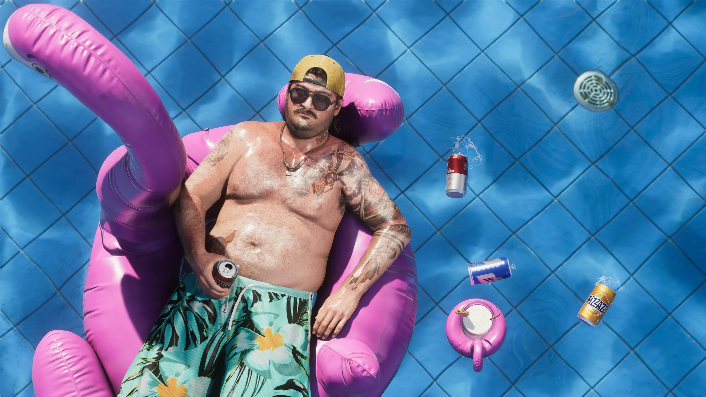
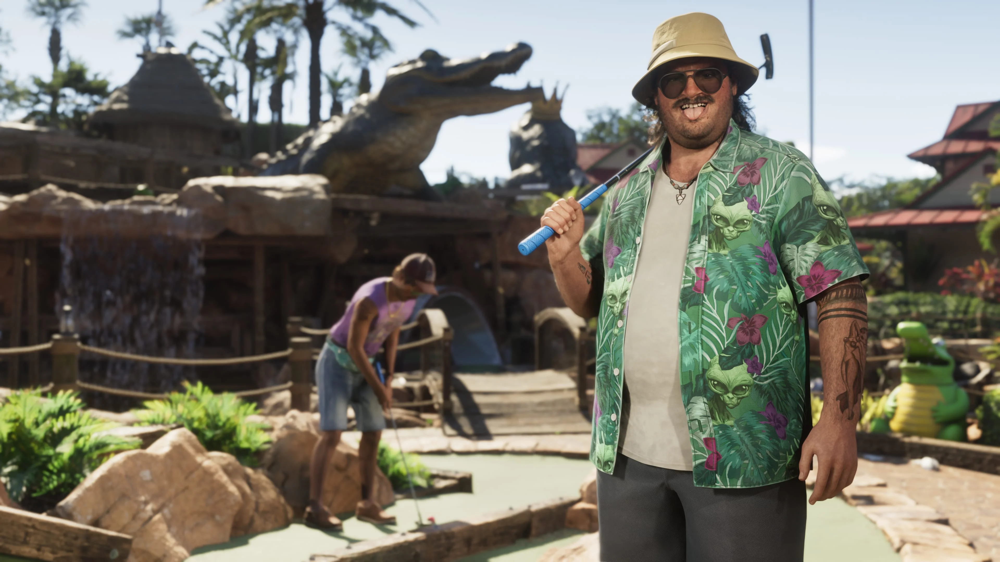
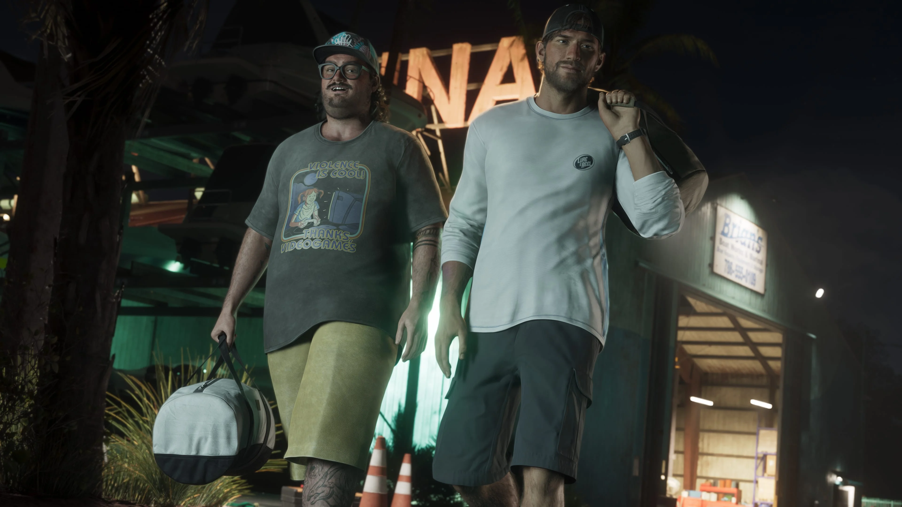
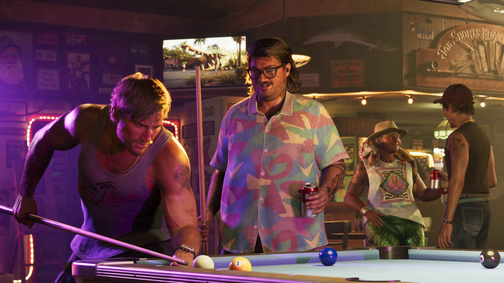

Jason Duval
Jason é amigo de Cal. Enquanto Cal parece confortável com sua situação atual, a apresentação oficial deixa claro que Jason possui planos maiores.
Conhecer Jason

Cal Hampton é amigo de Jason Duval e também associado de Brian Heder em Grand Theft Auto VI.
Cal se sente mais seguro ficando em casa, acompanhando comunicações da Guarda Costeira com algumas cervejas por perto e abas privadas abertas no navegador. A paranoia casual faz parte de sua apresentação oficial.
Cal está diretamente ligado a Jason Duval e Brian Heder. A Rockstar o apresenta como amigo de Jason e também como outro associado de Brian.
Seu perfil, porém, é bem diferente do de personagens que estão sempre procurando a próxima grande oportunidade. Cal parece confortável com o lugar em que está.
Enquanto ele prefere observar as coisas de casa e alimentar suas suspeitas sobre o mundo ao redor, Jason é apresentado como alguém com planos maiores.
Esse contraste ajuda a definir a relação entre os dois sem precisar transformar Cal em algo que ainda não foi confirmado para a história.

A apresentação oficial de Cal destaca seu jeito desconfiado e sua preferência por permanecer em casa.
Ele passa o tempo espionando comunicações da Guarda Costeira, acompanhado de algumas cervejas e de suas próprias buscas no navegador.
As falas divulgadas pela Rockstar reforçam esse lado paranoico: Cal suspeita de padrões estranhos e demonstra uma visão pouco otimista sobre quem está no comando.
Ainda assim, ele parece satisfeito com sua situação. A Rockstar o descreve como alguém feliz nesse ponto baixo, enquanto Jason continua pensando em algo maior.

As informações oficiais conectam Cal diretamente a Jason Duval e Brian Heder.
Cal é amigo de Jason e, assim como ele, possui ligação com Brian. A Rockstar apresenta Brian como um traficante veterano que ainda movimenta produto por seu estaleiro.
Jason vive sem pagar aluguel em uma das propriedades de Brian em troca de ajudá-lo com cobranças e intimidações locais. Cal é mencionado como outro associado de Brian.
O material divulgado até agora estabelece essas relações, mas ainda não detalha qual será o papel de Cal nos acontecimentos da história de GTA VI.

Relações mencionadas diretamente nos materiais oficiais de Grand Theft Auto VI.
Jason é amigo de Cal. Enquanto Cal parece confortável com sua situação atual, a apresentação oficial deixa claro que Jason possui planos maiores.
Conhecer JasonCal é apresentado como outro associado de Brian Heder, veterano traficante ligado à região das Leonida Keys.
Conhecer BrianOs quatro screenshots oficiais de Cal Hampton publicados na biblioteca de mídia da Rockstar Games.
Esta área reúne somente informações apresentadas oficialmente para o personagem.
Cal Hampton é apresentado oficialmente como amigo de Jason Duval.
Cal também é apresentado como outro associado de Brian Heder.
Cal acompanha comunicações da Guarda Costeira enquanto permanece em casa.
A própria apresentação oficial associa Cal a um comportamento paranoico.
Cal é descrito como alguém que se sente mais seguro permanecendo em casa.
A Rockstar contrasta a satisfação de Cal com os planos maiores de Jason.
As informações e imagens desta página são baseadas em materiais oficiais publicados pela Rockstar Games.
Página oficial que apresenta Cal Hampton, sua amizade com Jason, sua ligação com Brian e os principais traços divulgados para o personagem.
Ver perfil oficialBiblioteca oficial de mídia da Rockstar Games, com quatro screenshots identificados como Cal Hampton.
Ver screenshots oficiais